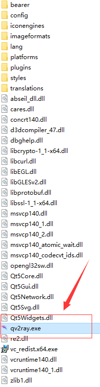
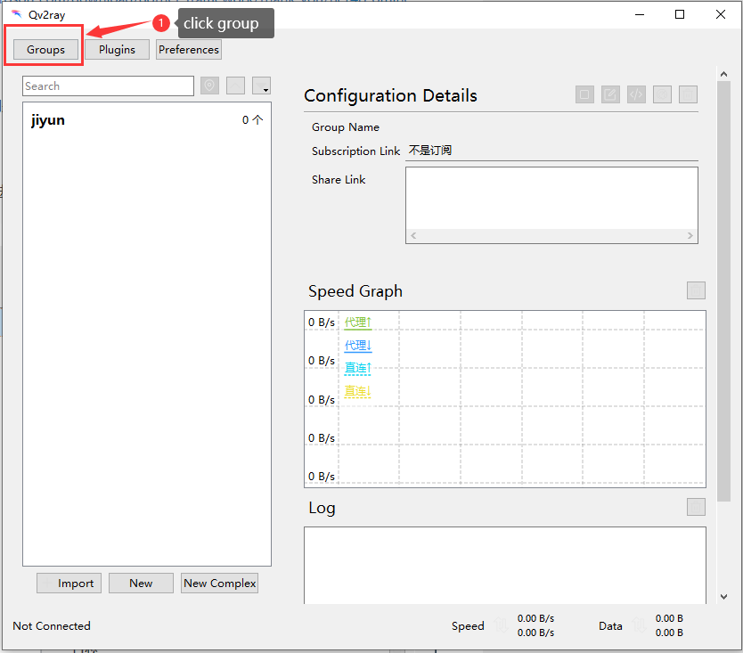
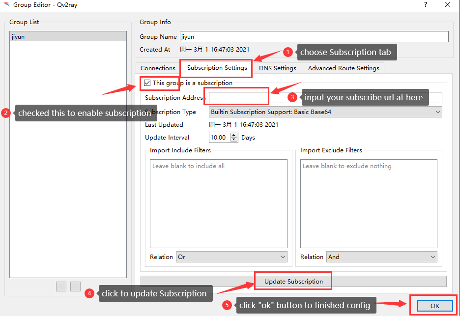
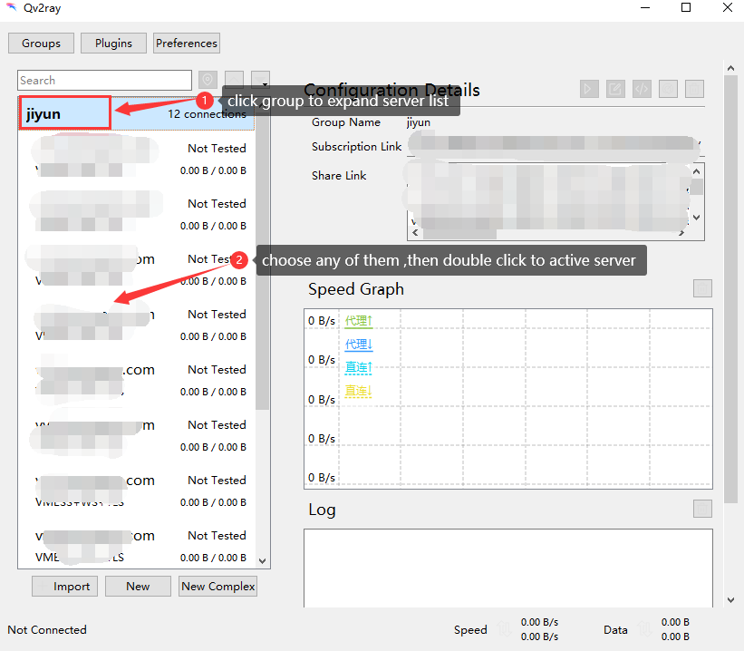
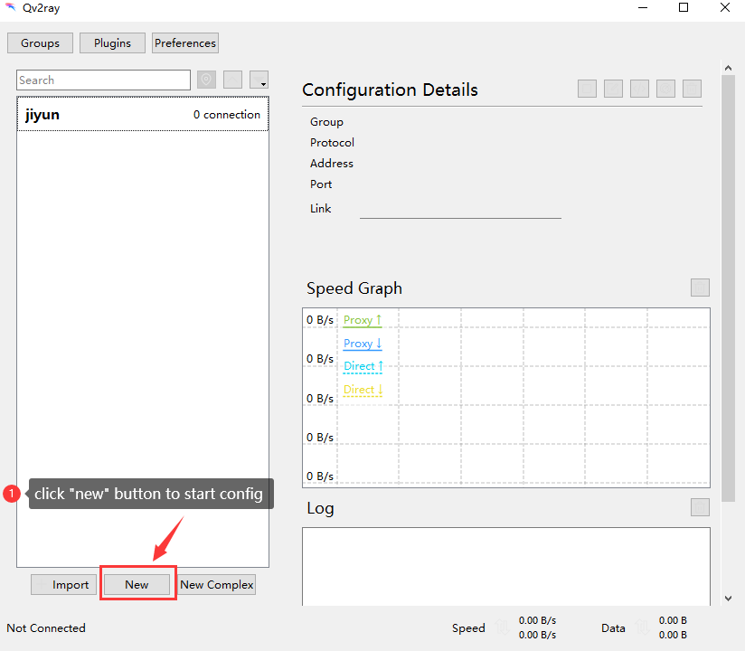
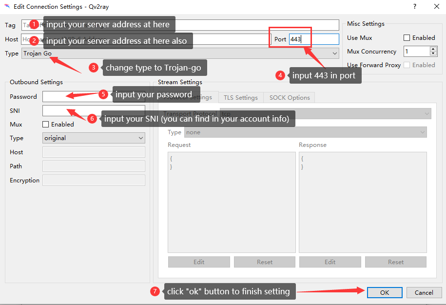
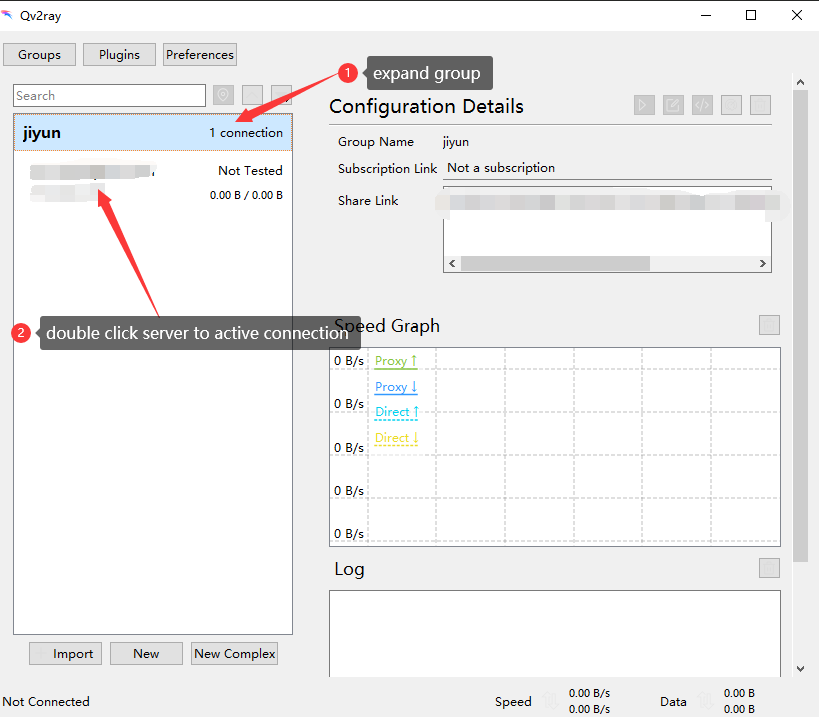

1、software download link：https://wwa.lanzous.com/iNkermcwbre
Pls extract all file to one folder ,and open qv2ray（see the picture below）
pls install .netframework if you can’ to open software
download link for .netframework 4.8：https://dotnet.microsoft.com/download/dotnet-framework/thank-you/net48-offline-installer
2、follow the picture below to config：
method 1 with auto config（recommend）
1、click “group” button
2、follow the picture below to set
3、expand group then double click server to active connection
method 2 （input account info manual）
Attention: pls try method 2 when failed with mentho 1,dont need to set again if you can do it successfully with method 1
1、click “new” buttonto start config
2、follow the picture below to set
3、expand the group ,then double click server to active connection after setting
